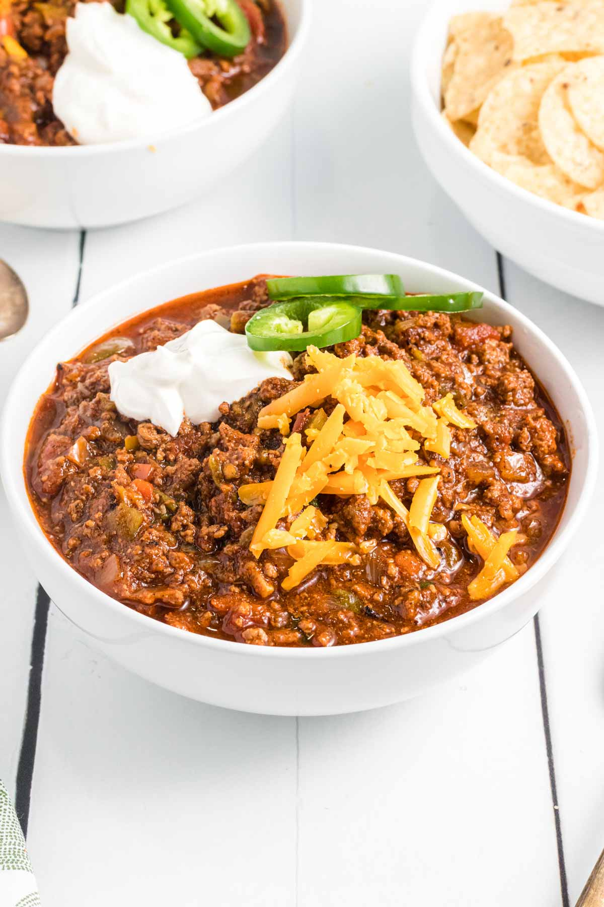

Chili

Ingredients
- 1lb ground beef (or turkey)
- 1 onion
- 5-6 cloves of garlic
- 14 oz tomato sauce
- 12 oz amber beer (like Shiner)
- 1 can of Rotel
- 3 Tbsp chili powder
- 1 Tbsp cumin
- 1/2 Tbsp paprika
- 1 Tbsp chili flakes
- 1 Tsp dried sage
- 1 Tsp oregano
- 1 Tsp thyme
Preperation
- Brown the ground meat in a large pan
- Once meat is browned add all the spices
- Remove meat from pan. Discard all but 1 Tbsp of grease (or add a bit of olive oil) and cook onion and garlic until onion is translucent
- Add meat back into pan and pour in tomato sauce, beer, and Rotel
- Bring to a boil, then reduce heat to low and let simmer for at least 1 hour
- Serve with cheese, sour cream, Fritos, etc.